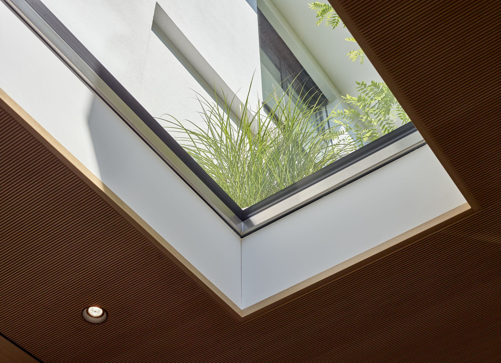
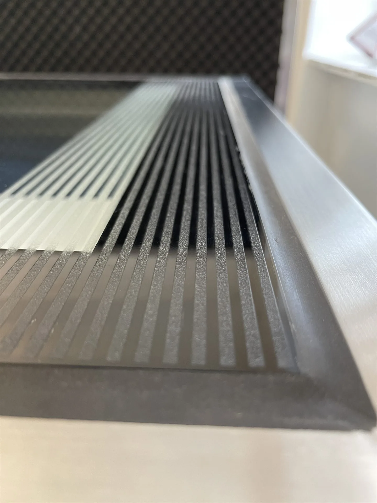

Pochozí světlíky pro architekty: podklady a technika.
Technická data z produktových listů, výrobní detail napojení, kdo u projektu stojí s vámi a otevřeně i to, kdy vám GLASSFLOOR nedoporučíme.
S kým u projektu stojíme.
Zadání se liší podle toho, kdo projekt vede. Systém zůstává stejný, mění se jen to, co od nás potřebujete nejdřív.
Začít s vaším projektemArchitekt
Návrh se nemusí ohýbat podle katalogu. Rozměr, tvar i způsob osazení vycházejí z vaší kresby, ne z toho, co je zrovna na skladě. Kruh, obdélník i štíhlý pás vyrobíme ve stejné kvalitě provedení.
Projektant
Technické řešení a podklady podle konkrétní konstrukce a skladby. Napojení, zatížení i detail osazení řešíme k vaší dokumentaci, ne obecně. Řezy pro projekt najdete ke stažení.
Soukromý investor
Stavba, kde má výsledek vypadat dobře i za deset let. Kvalita provedení, čistota detailu a dlouhodobé provedení stojí výš než nejnižší pořizovací cena.

Přesnost, která po dokončení stavby mizí z očí.
- Bezprahové osazení, sklo v jedné rovině s okolním povrchem.
- Čisté linie, rám po dokončení stavby téměř neviditelný.
- Rám, zasklení a napojení vznikají jako jeden systém.
- Každý kus odpovídá konkrétní skladbě konstrukce.
Podklady, se kterými pracuje projektant.

- PůvodSwiss made · Heliobus AG, St. Gallen
- Nosné sklovrstvené bezpečnostní (VSG), extra čiré
- Tepelná izolaceUg 1,1 · Super ISO 0,5 W/m²K
- Propustnost světla73–88 % dle zasklení
- Zvuková izolaceRw ≥ 40 dB
- Zatíženíužitné zatížení 5,0 kN/m²
- Bezpečnosttřída odolnosti P8B
- Rámnerez 1.4301, tepelně oddělený, fasáda 4 cm
- Rozměrna míru od 40 cm, horní limit bez omezení
- Osazeníbezprahové, v rovině okolního povrchu
- Řady a variantychrome · pure · circle · FIRESTOP REI 30–120
Hodnoty z produktových listů Heliobus AG. Posouzeno zkouškami Fraunhofer IBP Stuttgart a osvědčením IFT podle DIN 18008-5. Pro projekci platí výrobní dokumentace ke konkrétnímu kusu.
Detaily napojení a technické listy ke staženíKdy vám doporučíme něco jiného.
Řekneme to radši hned. Jsou stavby, kde by byl náš systém zbytečný, a poznáme to už z jednoho řezu.
Když je hlavním kritériem cena
GLASSFLOOR je zakázkové švýcarské prosklení v nerezovém rámu. Cenově patří ke kvalitnímu velkoformátovému prosklení, u menších standardních formátů začíná kolem 100 000 Kč.
Pokud hledáte úspornější způsob, jak dostat světlo o patro níž, poradíme vám, kde ho hledat. I když ho sami nedodáváme.
Když nezbývá čas
Každý kus jde do výroby až po odsouhlaseném návrhu a vyrábí se ve Švýcarsku. Mezi zadáním a osazením proto počítejte s několika týdny.
Ten čas není zdržení. Je v něm posouzení konstrukce, výrobní dokumentace, slícování a kontrola. Prvek se pak na stavbě už jen usadí.
Když na to není v konstrukci místo
Rám má výšku 12 cm, potřebuje spolehlivé uložení a spád aspoň 1,5 %, aby po skle odtékala voda. Když to skladba stropu nedovolí, řekneme to rovnou a hledáme jinou cestu.
Když jde o technický prostor
Tam, kde nikdo netráví čas a nezáleží na vzhledu podlahy nad ním, je GLASSFLOOR zbytečný. Vynikne tam, kde je prosklení součástí architektury.
Kdy naopak sedne přesně
Když má stavba vypadat dobře i za deset let, když se pochozí plocha nemá tvářit jako světlík a když víte, že rozdíl mezi dobrým a odbytým detailem uvidíte každý den. Hotový otvor přitom nevadí, kus vyrobíme přesně na jeho rozměr.
Co projektanti zjišťují nejčastěji.
Jaké podklady pro projekt GLASSFLOOR nabízí?
Osm výrobních detailů napojení v PDF (chrome, pure, circle a dělení skla), tři produktové listy a zkušební doklady. Výkresy DWG a DXF se dodávají přímo k projektu.
Čím je systém posouzen?
Zkouškami Fraunhofer IBP Stuttgart a osvědčením IFT podle DIN 18008-5.
Jaké zatížení pochozí zasklení snese?
Užitné zatížení je 5,0 kN/m², třída odolnosti P8B. Vyšší únosnost včetně pojezdu se navrhuje zakázkově.
Představte nám svůj projekt.
Pošlete základní výkres, řez nebo popis záměru. Posoudíme vhodnost systému GLASSFLOOR a navrhneme další technický postup.
Údaje o rozměrech, doplňcích a požární odolnosti vycházejí z podkladů výrobce Heliobus AG platných k 1. 9. 2026. Závazné jsou vždy podklady ke konkrétní zakázce.